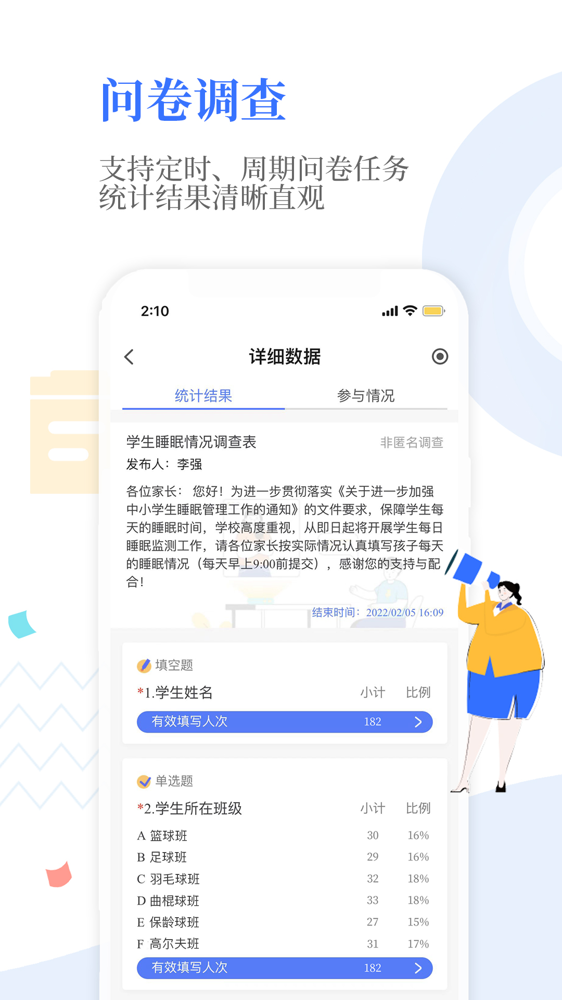

孩子换了新学校，Our School 家长端从零上手指南
不少家长第一次用 Our School 时面对满屏卡片一头雾水——这篇教程带你从零装好 APP、绑定孩子、读懂学情分析和数字画像，把学校发来的通知、作业、考勤数据真正用起来。
这篇教程结束时，你能把 Our School 家长端装到手机上，完整走完绑定孩子、查看考勤作业、读懂 AI 学情分析报告、解读数字画像雷达图这四件事，同时能在遇到"收不到通知""数据不对"这类常见卡点时自己排查解决。
准备工作
Our School 是学校统一采购部署的数字校园基座，它的官网上有完整的功能矩阵和学校接入资质说明。家长端不需要单独注册——绑定账号靠学校发给你的邀请码或班级群里的绑定链接。
- 平台覆盖 iOS、Android、HarmonyOS，手机应用商店直接搜就能找到，也可以从官方下载拿到各平台安装包
- PC 端有网页版，用浏览器打开即可，适合长辈或喜欢在大屏上看数据的家长
- 绑定时需要用到孩子的姓名和学号，提前准备好
第一步：安装并绑定孩子
打开应用商店搜 Our School，认准学校给你的图标就下。装完点开，点首页的"立即绑定"按钮。
输入学校名称或邀请码——学校开学时班主任一般会在班级群发过这条信息，找不到就问一下。然后填孩子的真实姓名和学号，系统匹配到后让你选和孩子的关系（爸爸 / 妈妈 / 祖父母 / 其他）。
这里注意：一个家长账号可以绑定多个孩子（比如二胎家庭或托管孩子），在"孩子档案"里点"+ 添加孩子"就行，切换孩子用顶部下拉框，别以为绑了一个就不能加。
绑定成功后系统会让你确认——这时候先别急着点下一步，花 30 秒扫一眼权限请求：通知权限必须开（不然收不到任何学校消息）、后台刷新建议允许、位置权限按需来（有些学校考勤打卡需要，但大多数家长端场景不需要定位）。
第二步：搞懂首页的五张卡片
进首页后你会看到一屏卡片，这是 Our School 每天打开时第一个要看的地方。从上到下依次是：
- 最新通知：学校公告、班级通知、临时停课消息都堆在这里。右上角有红点说明有未读，点进去会按时间倒序列出来，看过的会自动标记已读
- 今日考勤：孩子当天的到校状态——已刷卡 / 迟到 / 请假。点进去能拉看到最近一个月的出勤率和迟到频次
- 待办作业：今天和明天截止的作业会高亮显示，点进去可以看具体科目、老师布置时间、截止倒计时
- 学情速览：AI 生成的温和建议卡片，比如"最近三天作业完成率有点下降，可以聊聊"——别紧张，这不是批评，是系统从数据里识别出的模式提醒
- 孩子画像入口：带雷达图缩略的大卡片，点进去看完整的数字画像
日常用下来，你真正需要每天点的其实只有通知和考勤两张卡——其他的一周扫一次就够。
第三步：打开学情分析看数据
点首页"学情速览"卡片，或者直接进"孩子档案 → 学情分析"，会看到一屏图表。别被一堆折线图吓到，拆解来看只有三个维度：
出勤指标：月度出勤率、迟到频次、请假原因分布。出勤率低于 95% 时系统会用温和颜色标出来，不会用红色吓你。如果发现孩子最近连续迟到，回到考勤卡看具体哪几天，对比家里出门时间就能找到原因。
学业指标：作业完成率趋势（折线图）、作业得分分布（高分 / 中分 / 低分占比饼图）、各科目作业量对比柱状图。科目对比那张很有用——一眼看出哪科老师布置得多、孩子哪科压力大。
行为习惯：习惯打卡连续天数、德育积分变化、活动参与频次。打卡中断系统不会扣分，只会提醒"打卡可以灵活调整目标"——这点设计挺贴心，不制造焦虑。

每个指标右上角有个"显示班级平均"开关——学校开启后能把孩子数据和班级整体水平对比，但只是参考，别一看到低于平均就焦虑，数据样本量小的时候参考价值有限。想详细了解每个指标的数据来源和计算方式，可以翻一下Our School文档。
第四步：读懂孩子的数字画像
这是 Our School 最有特色的功能。进"孩子档案 → 数字画像"，先看到的是一张六维雷达图：学业、出勤、行为、互动、社交、教师评价，六个维度各有一个分数，连起来就是立体的形状。虚线是同年级平均水平，一眼就能看出哪方面是优势、哪方面需要多关注。
系统还会自动生成两样东西：
自动评语：学期末约 200 字的学期总结，基于本学期的考勤、作业、考试数据加上班主任提交的评价关键词，老师可以在这个基础上修改补充。别把它当终稿——AI 只是提供一个初稿框架，老师的修改才是关键。
薄弱点提示：识别到数据异常时推送温和提示，比如"连续一周出勤率低于 90%"或"某科目作业完成率持续低于班级平均"。提示文案刻意用委婉的语气，不会让家长有"我是不是没做好"的压力。
第五步：跟老师留言互动
首页顶部有"家校留言"入口，点进去可以直接给班主任发消息——不用加微信、不用进群就能一对一沟通。学校开启了班级群功能的话，群入口也在这里。
留言有个小技巧：先看看学情分析再问老师。比如你发现孩子作业完成率连续一周下降，先在学情里确认是哪几科、什么时间段，带着具体数据去问，老师能更快定位问题，而不是"老师我家孩子最近学习怎么样"这种空问。
三个新手最容易翻车的卡点
卡点一：收不到通知。这是家长群里出现频率最高的问题，排查顺序就按三步来：先查手机系统通知权限（设置 → 应用管理 → Our School → 通知开关），再查 APP 内消息通知开关（"我" → 设置 → 消息通知 → 确认分类开关都开着），最后看免打扰时段有没有覆盖当前时间。三步跑完还不行就退出重新登录一次。
卡点二：数据明显不对。比如考勤显示没刷卡但孩子明明到了、作业完成率算少了。这种情况别第一时间怪 APP，先问班主任确认上游环节：考勤数据是刷卡硬件传过来的，可能有刷卡没识别上；作业数据是老师手动布置和批改的，老师没及时录入的话家长端就是空的。大多数情况不是软件 bug。
卡点三：绑定时匹配不到孩子。检查姓名和学号有没有输错（学号容易漏输或多输一位），确认学校是不是还没把这届学生的数据导入系统。找班主任核对一下班级信息，重新绑一次一般就过了。
往下还能玩什么
一周以上熟练使用后，建议跟班主任约一次 15 分钟的小沟通——带上你在学情分析里看到的薄弱点、数字画像里需要关注的维度，和老师一起对照看看哪些是数据真实反映的、哪些需要实际观察验证。Our School 提供的是工具，最终怎么解读这些数据、怎么配合学校教育，还是要靠家校双方的沟通。
这套资料在三个仓库都能拿到——社区维护的家长使用手册最近刚更新了 V2 版，补了不少老用户反馈的实操细节。主线托管在GitHub，国内访问慢的话可以切到Gitee或GitCode的镜像，内容同步更新不会差。